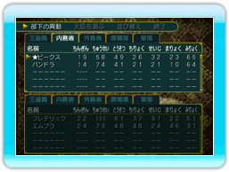
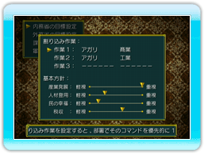
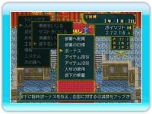

13 |
部下をいじる |
 |
部下に直接命令を出すには、部下を王直属の部署に配属する必要がありますが、それらの部下を内務省や外務省、諜報部、軍部に配属することで、部下は大臣を中心に自動的に働いてくれます。 「部署への配属」について  ◆部下の異動 部下を各部署に配置します。 ◆大臣を選ぶ 部署の大臣を任命します。大臣は部下に命令する立場となるので、大臣自身は行動しなくなります。 ◆並び替え 各部署で働く人のリストを、パラメータの数値順に並び替えます。 ◆終了 部署への配属を終了します。 「部署の目標」について  部署の基本方針と、すぐに実行して欲しい仕事を「割り込み作業」として設定します。「割り込み作業」は各部署で３つまで設定できます。 部下への関与について 王様が部下に対して実行できるコマンドには、以下のものがあります。  ◆ボーナス 部下にお金をあげて、忠誠心を上げます。 ◆アイテム授与 部下にアイテムをプレゼントして、忠誠心を上げます。 ◆アイテム没収 部下の持っているアイテムを取り上げます。 忠誠心は下がりますが、取り上げたアイテムは国のものになります。 ◆人材の登用 まだどこの国にも所属していない人材を、自分の国で部下として採用します。 ◆部下の解雇 部下をクビにします。 |
 |
 |
 |